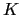
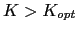
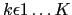
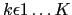
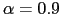
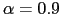

Next: Clusters Comparison, Pruning and Up: The ICSI Broadcast News Previous: Speech/non-Speech Detection and Parameters Contents
The system implemented at ICSI for broadcast news is based on an agglomerative clustering process that iteratively merges clusters until getting to the optimum number of clusters. In order to initialize the system one needs to obtain an initial set of clusters  (where , the optimum number of clusters representing the number of speakers in the recording). During the implementation of the original system two alternatives were considered, on one hand, a k-means algorithm was tested in order to split the data into clusters containing homogeneous frames. Another alternative was to split the data into even sized pieces. The second was finally selected due to its simplicity and the good results that it achieved on most data.
The linear initialization of the data into clusters is a simple algorithm that clusters the data according to its temporal proximity rather than acoustic proximity, allowing for models to be trained with acoustic data of very different acoustic characteristics that belongs to the same speaker.
In order to create clusters the clusters initialization
algorithm first splits the show into  partitions (where
for Broadcast news). Then for each partition the data is split
into segments of the same size and labelled . The
initial data for cluster
partitions (where
for Broadcast news). Then for each partition the data is split
into segments of the same size and labelled . The
initial data for cluster  (where
) is the
union of the data labelled
(where
) is the
union of the data labelled  for each of the partitions. This
technique is thought to work better than a more elaborate
frame-level k-means algorithm because it takes into account the
possible acoustic variation of the speech belonging to a single
speaker. By clustering the data with k-means one cannot ensure
that the resulting clusters contain frames from the same speaker,
but maybe it contains acoustic frames that belong to the same
phonetic class from several speaker.
for each of the partitions. This
technique is thought to work better than a more elaborate
frame-level k-means algorithm because it takes into account the
possible acoustic variation of the speech belonging to a single
speaker. By clustering the data with k-means one cannot ensure
that the resulting clusters contain frames from the same speaker,
but maybe it contains acoustic frames that belong to the same
phonetic class from several speaker.
Each initial cluster obtained via linear initialization it will most certainly have data belonging to more than one source/speaker. In order for the clusters to achieve some speaker homogeneity before stating the merging iterations the algorithm performs three iterations of models training and Viterbi segmentation of the data. Next section goes into more detail how clusters are modeled. The resulting clusters tend to contain data from a single speaker or at least a majority of it.
There are some occasions when using linear initialization that it creates clusters with acoustic segments from more than one speaker, causing them potential merging errors and therefore a decrease in performance. In the improvements for the meetings room data a new initialization algorithm and a segment purification algorithm, that detects and splits such clusters, will be proposed.
The broadcast news clustering algorithm models the acoustic data
using an ergodic hidden Markov model (HMM) topology, as seen in
figure 3.2, where each initial state corresponds to
one of the initial clusters. Upon completion of the algorithm's
execution, each remaining state is considered to represent a
different speaker. Each state contains a set of  sub-states,
imposing a minimum duration of staying in any model. Each one of
the sub-states has a probability density function modeled via a
Gaussian mixture model (GMM). The same GMM model is tied to all
sub-states in any given state. Upon entering a state at time
sub-states,
imposing a minimum duration of staying in any model. Each one of
the sub-states has a probability density function modeled via a
Gaussian mixture model (GMM). The same GMM model is tied to all
sub-states in any given state. Upon entering a state at time  ,
the model forces a jump to the following sub-state with
probability
,
the model forces a jump to the following sub-state with
probability  until the last sub-state is reached. In that
sub-state, we can remain in the same sub-state with transition
weight
until the last sub-state is reached. In that
sub-state, we can remain in the same sub-state with transition
weight  , or jump to the first sub-state of another state
with weight , where
, or jump to the first sub-state of another state
with weight , where  is the number of active
states/clusters at that time. The diarization system for broadcast
news used values
 and
is the number of active
states/clusters at that time. The diarization system for broadcast
news used values
 and  with the intention
of favoring the system to stay in the same cluster and therefore
model speaker turns bigger than
with the intention
of favoring the system to stay in the same cluster and therefore
model speaker turns bigger than  frames. As will be shown,
this implicitly models the maximum length for a speaker term. In
the meetings system it is modified to reduce such constraint.
frames. As will be shown,
this implicitly models the maximum length for a speaker term. In
the meetings system it is modified to reduce such constraint.
Each of the GMM models initially has a complexity of 5 Gaussian mixtures, which was optimized using development data from previous evaluations. Upon deciding that two clusters belong to the same speaker, one of the clusters/models is eliminated from the HMM topology, M is reduced by 1 and the resulting model is trained from scratch with a complexity being the sum of the previous two models. This ensures that the complexity of the overall system after any particular iteration remains constant and therefore the overall likelihood of the data given the overall HMM model can be compared between iterations.
user 2008-12-08